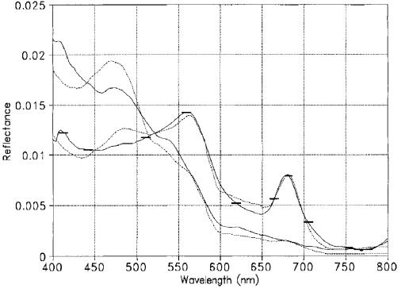
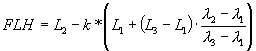
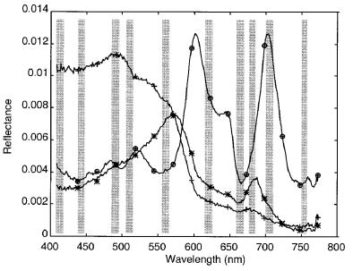

| FLH/MCI Algorithm Specification |
|
Algorithm Specification of the science processors of the MERIS/(A)ATSR Toolbox
The fluorescence line height and maximum chlorophyll index algorithms exploit the height of the measurement in a certain spectral band above a baseline, which passes through two other spectral bands. The best known algorithm is the fluorescence line height, where the phytoplankton chlorophyll fluorescence at 680.5 nm is measured and its height above a baseline through the measurements at 664nm and 708nm is calculated (see figure 1 below). This is used as an indicator for the biological activity of the phytoplankton. Also, other band combinations provide important indices, e.g. such as the maximum chlorophyll index (bands 680.5, 708 and 753nm, see figure 2), which can be applied, for example, to MERIS L1b measurements which can indicate red tides.

Figure 1
The general form of a baseline algorithm is:
where the indices 1 and 3 indicate the baseline bands and index 2 the peak wavelength. This algorithm is taken from the following publication: "Interpretation of the 685 nm peak in water-leaving radiance spectra in terms of fuorescence, absorption and scattering, and its observation by MERIS" J. F. R. Gower, R. Doerffer, G. A. Borstad, Int. J. Remote Sensing, 1999, vol. 20, no. 9, 1771-1786.
The algorithm implemented in the FLH/MCI processor contains an additional factor to correct the influence of thin clouds. This factor was introduced according to personal communications with J.F.R. Gower in February 2003.

Figure 2

Figure 3